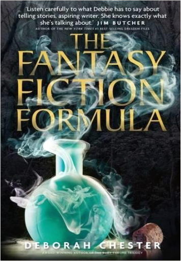

There is one sure-fire way of improving your novel fast. . . You may know the fundamentals of how to write fiction. You may be more than competent in plot, structure and characters. But if your dialogue is dull it will drag the whole story down. On the other hand, if your dialogue is crisp and full of tension it immediately grabs the reader. And if that reader is an agent or editor, sharp dialogue will give them instant assurance that you know what you're doing as a writer. Writing a bestseller or hot screenplay is no easy task, but dazzling dialogue is an absolute essential if you want to get there. The best part is, the skills of the dialogue craft are easy to understand and put into practice. #1 bestselling writing coach James Scott Bell has put together and expanded upon the dialogue lectures from his popular writing seminars. In How to Write Dazzling Dialogue you'll learn:What fictional dialogue is ... and isn'tThe 11 secrets of crafting memorable dialogueThe 5 essential tasks of dialogue5 ways to improve your dialogue ear4 can't-miss methods to increase conflict and tension in any dialogue exchangeThe top 10 dialogue issues, and how to resolve themYou'll also see dazzling dialogue in action with examples from hit novels and screenplays. Don't sabotage your chances of selling your work to readers or publishers because the dialogue is unexceptional. Dazzle them with what the characters say. How to Write Dazzling Dialogue will give you the tools to do it.  Type Hard. Type Fast. Make Dough.That was the formula of old-school pulp fiction—plot-driven, popular and gobbled up by a reading public hungry for more.  Continuously in print for over 100 years, the SD remains today the most comprehensive sourcebook of the esoteric tradition, outlining the fundamental tenets of the Secret Doctrine of the Archaic Ages. Challenging, prophetic, and strikingly modern, it directly addresses the perennial questions: continuity of life after death, purpose of existence, good and evil, consciousness and substance, sexuality, karma, evolution, and human and planetary transformation. Based on the ancient Stanzas of Dzyan with corroborating testimony from over 1,200 sources, these volumes unfold the drama of cosmic and human evolution — from the reawakening of the gods after a Night of the Universe to the ultimate reunion of cosmos with its divine source. Supplementary sections discuss relevant scientific issues as well as the mystery language of myths, symbols, and allegories, helping the reader decipher the often abstruse imagery of the world's sacred literature.  The provocative bestseller She’s Not There is the winning, utterly surprising story of a person changing genders. By turns hilarious and deeply moving, Jennifer Finney Boylan explores the territory that lies between men and women, examines changing friendships, and rejoices in the redeeming power of family. Told in Boylan’s fresh voice, She’s Not There is about a person bearing and finally revealing a complex secret. As James evolves into Jennifer in scenes that are by turns tender, startling, and witty, a marvelously human perspective emerges on issues of love, sex, and the fascinating relationship between our physical and intuitive selves. Now with a new epilogue from the author and an afterword from Deirdre "Grace" Boylan, She’s Not There shines a light on the often confounding process of accepting ourselves.  For those contemplating religious choices, Unitarian Universalism offers an appealing alternative to religious denominations that stress theological creeds over individual conviction and belief. In this new edition of the classic introductory text on Unitarian Universalism, which includes a revealing, entertaining foreword by best-selling author Robert Fulghum (All I Really Need to Know I Learned in Kindergarten, It Was on Fire When I Lay Down on It), a new preface by UU moderator Denise Davidoff, and two new chapters by the authors, John Buehrens and Forrest Church explore the many sources of the living tradition of their chosen faith.  Two girls, a new school, and the beginning of a beautiful friendship.  Ai Uehara and Chiharu Kusakabe's beloved senior Hoshino-senpai is graduating. She wants to study science at a school far away, but that means Ai and Chiharu won't see her anymore. Ai struggles with the reality of senpai leaving, while Chiharu battles with her own unrequited feelings When a bold underclassman interlopes, though, things might take an unexpected turn... |  (Volume 3)  Phone Losers of America is a collection of short stories which take you on a twenty year journey of high-tech humor, culture jamming, and criminal mischief. From remotely controlling the overhead paging system of a large supermarket, to confusing the phone company with various call forwarding stunts, this bizarre collection of pranks will not only make you laugh, but will make you question the security and sanity of common, everyday business procedures. Learn how one illustrious member of the PLA crossed the country on stolen credit cards, staying in the nicest hotels one day and then sleeping on the streets of major cities the next, all while amusing himself at the expense of others. Laugh as he turns a radio morning show into his own interactive game, enrages users of an online auction site, uses revenge tactics that cross the line, systematically drives convenience store employees nuts so that he can get a job, and confuses an entire neighborhood of cordless phone users. The stories contained in this book are based on the writings from the Phone Losers of America website which have been featured in USA Today, the Boston Herald, 2600, on CNBC, CNN, TechTV, and countless other websites, books, magazines, radio shows and police reports.  Despite being incredibly popular during his time, Nikola Tesla today remains largely overlooked among lists of the greatest inventors and scientists of the modern era. Thomas Edison gets all the glory for discovering the light bulb, but it was his one-time assistant and lifelong arch nemesis, Tesla, who made the breakthrough in alternating current technology. Edison and Tesla carried on a bitter feud for years, but it was Tesla's AC generators that illuminated the 1893 World's Fair in Chicago; the first time that an event of such magnitude had ever taken place under artificial light. Today, all homes and electrical appliances run on Tesla's AC current.  Book on Michael Jackson All That Glitters: The Crime and the Cover-Up  Discover why more people continue to choose Paleo for Beginners—the New York Times bestselling Paleo cookbook that has sold over 150,000 copies sold—more than any other Paleo cookbook.  The Fantasy Fiction FormulaDeborah Chester There's more to writing a successful fantasy story than building a unique world or inventing new magic. How exactly is a plot put together? How do you know if your idea will support an entire novel? How do you grab reader attention and keep it? How do you create dynamic, multi-dimensional characters? What is viewpoint and do you handle it differently in urban fantasy than in traditional epics? What should you do if you're lost in the middle? How do you make your plot end up where you intend it to go?  A heartwarming transgender love story, based on true events! |

Github Pages
Collection Total:
275 Items
275 Items
Last Updated:
Oct 8, 2018
Oct 8, 2018
 Made with Delicious Library
Made with Delicious Library